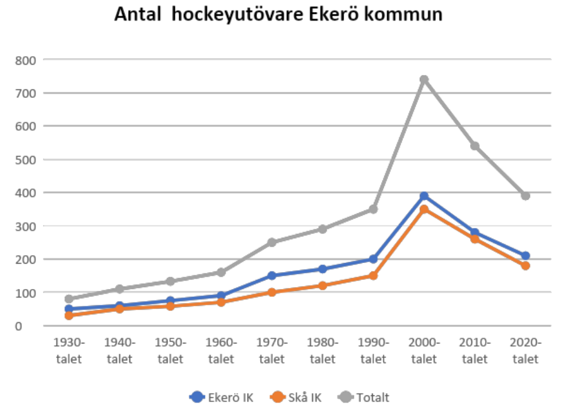

Bakgrund
Hockeyn på Mälaröarna har funnits sedan 1940 och var som mest ca 700 utövare totalt 2005. Konkurrensen från andra aktiviteter har påverkat antalet negativt till idag då klubbarna har ca 200 spelare från hockeyskolan till seniorlag.
Föreningarna Ekerö IK och Skå IK & Bygdegård beslutade inför säsongen 18/19 att samverka mellan föreningarnas hockeysektioner.
Syftet är främst att det skall bli fler spelare i varje lag för en kvalitativ hockey. Ytterligare syfte är att stärka idrotten från barn till vuxna på Ekerö samt bidra till folkhälsan i stort.
Målet är att få så många kvar i verksamheten så länge som möjligt. Föreningarna har en historia som vi tillsammans skall förvalta och komma ihåg, samtidigt behöver vi även utveckla hockeyn på Mälaröarna till en optimal lösning och hållbar nivå.